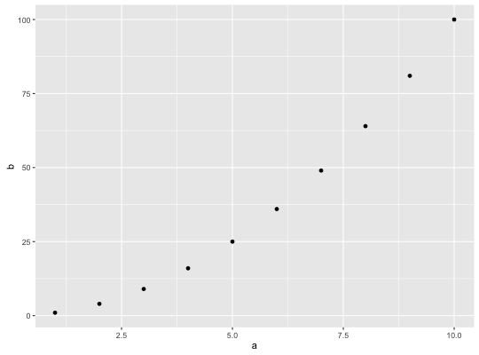

Quick plot
Usage
qplot(x, y = NULL, ..., data, facets = NULL, margins = FALSE, geom = "auto", xlim = c(NA, NA), ylim = c(NA, NA), log = "", main = NULL, xlab = deparse(substitute(x)), ylab = deparse(substitute(y)), asp = NA, stat = NULL, position = NULL)quickplot(x, y = NULL, ..., data, facets = NULL, margins = FALSE, geom = "auto", xlim = c(NA, NA), ylim = c(NA, NA), log = "", main = NULL, xlab = deparse(substitute(x)), ylab = deparse(substitute(y)), asp = NA, stat = NULL, position = NULL)
Arguments
- x,y,...
- Aesthetics passed into each layer
- data
- Data frame to use (optional). If not specified, will create one, extracting vectors from the current environment.
- facets
- faceting formula to use. Picks
facet_wraporfacet_griddepending on whether the formula is one- or two-sided - margins
- See
facet_grid: display marginal facets? - geom
- Character vector specifying geom(s) to draw. Defaults to "point" if x and y are specified, and "histogram" if only x is specified.
- xlim,ylim
- X and y axis limits
- log
- Which variables to log transform ("x", "y", or "xy")
- main,xlab,ylab
- Character vector (or expression) giving plot title, x axis label, and y axis label respectively.
- asp
- The y/x aspect ratio
- stat,position
- DEPRECATED.
Description
qplot is the basic plotting function in the ggplot2 package,
designed to be familiar if you're used to base plot().
It's a convenient wrapper for creating a number of different types of plots
using a consistent calling scheme.
Examples
# Use data from data.frame qplot(mpg, wt, data = mtcars)qplot(mpg, wt, data = mtcars, colour = cyl)qplot(mpg, wt, data = mtcars, size = cyl)
qplot(mpg, wt, data = mtcars, facets = vs ~ am)qplot(1:10, rnorm(10), colour = runif(10))qplot(1:10, letters[1:10])mod <- lm(mpg ~ wt, data=mtcars) qplot(resid(mod), fitted(mod))f <- function() { a <- 1:10 b <- a ^ 2 qplot(a, b) } f()
# To set aesthetics, wrap in I() qplot(mpg, wt, data = mtcars, colour = I("red"))# qplot will attempt to guess what geom you want depending on the input # both x and y supplied = scatterplot qplot(mpg, wt, data = mtcars)
# just x supplied = histogram qplot(mpg, data = mtcars)`stat_bin()` using `bins = 30`. Pick better value with `binwidth`.# just y supplied = scatterplot, with x = seq_along(y) qplot(y = mpg, data = mtcars)# Use different geoms qplot(mpg, wt, data = mtcars, geom = "path")qplot(factor(cyl), wt, data = mtcars, geom = c("boxplot", "jitter"))qplot(mpg, data = mtcars, geom = "dotplot")`stat_bindot()` using `bins = 30`. Pick better value with `binwidth`.